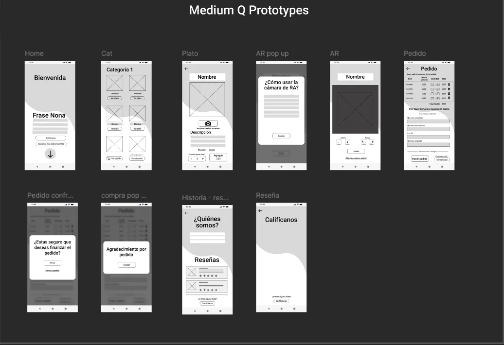

NonaAntojos
Um menu web para telemóvel de um negócio local de catering, pensado para que clientes com pouco tempo encontrem e encomendem o que querem em poucos toques.
- Papel
- Designer UX e criadora de conteúdos
- Estado
- Conceito de design
- Método
- Investigação de utilizadores e prototipagem rápida
- Ferramentas
- Figma

O desafio
A maioria dos clientes da NonaAntojos encomenda pelo telemóvel, muitas vezes com pressa. O menu antigo era uma lista longa e difícil de ler num ecrã pequeno.
O objetivo: um menu claro e agradável de percorrer, com categorias e pratos populares à mão, para que encomendar demore o mínimo possível.
Como trabalhámos
- Investigação: uma persona de uma profissional ocupada que encomenda para si e para a sua equipa.
- Arquitetura de informação: o conteúdo do menu decomposto e depois organizado numa estrutura clara.
- Fluxos: um fluxo de tarefas e fluxos de utilizador para o objetivo mais comum, fazer uma encomenda.
- Protótipos: ecrãs de média fidelidade no Figma para testar a disposição e a navegação.
O meu papel
Liderei o trabalho de UX e escrevi o conteúdo do menu: investigação, estrutura, fluxos e protótipos. Mantive a disposição simples, os textos curtos e as áreas de toque grandes, para que o menu funcione bem em qualquer telemóvel.
Artefactos de investigação e design
Selecione uma imagem para a ver em grande.